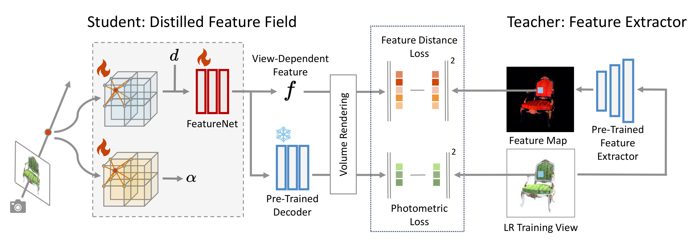

Trained with views in 1K, ASSR-NeRF renders 4K novel veiws.
Methods
Radiance Field Super-Resolution

Given a radiance field reconstructed from low-resolution (LR) training views, we perform radiance field super-resolution (SR), where the volumetric representation of the scene is enhanced utilizing SR priors. The enhanced volumetric representation can then render high-resolution (HR) novel views with cleaner details.
Overview of ASSR-NeRF

For any distilled feature field reconstructed from LR training views (grey part), VoxelGridSR module (orange part) performs self-attention on the volumetric representation and generate refined appearance feature and density for every sampled point. The refined features and densities are then aggregated to pixels, leading to novel view with rich and clean details.
Distilled Feature Field

We distill features from pre-trained feature extractor into volumetric representation so that VoxelGridSR module can utilize the queried SR priors and benefit self-attention. In a student-teacher setting, features extracted from training views are distilled into a 3D student network. The student network is trained by minimizing the difference between rendered features and features from pre-trained image feature extractor, in addition to rendered colors and ground-truth pixel colors. FeatureNet turn voxel feature into view-dependent distilled features, and a pre-trained decoder maps view-dependent features RGB color